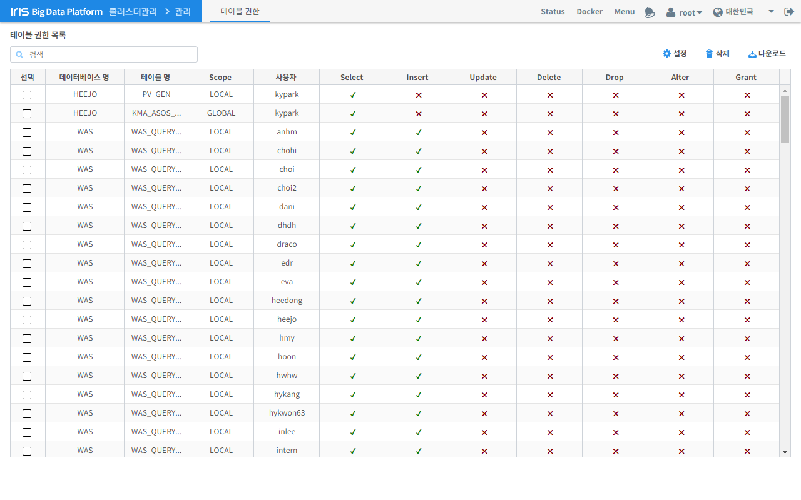
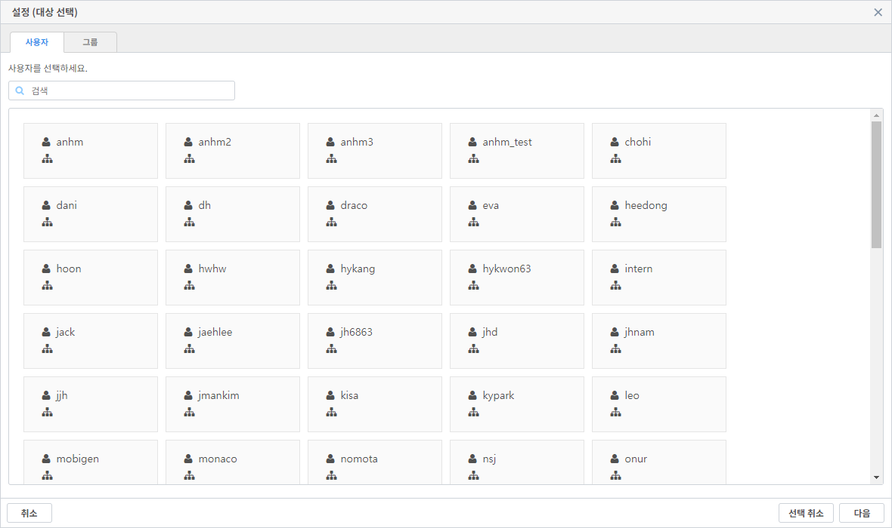

관리¶
테이블 권한¶
사용자별로 IRIS-DB 테이블에 접근 및 SQL 실행 권한을 부여할 수 있는 기능을 제공합니다.
번호 |
구분 |
설명 |
1 |
테이블 목록 |
테이블의 권한에 대한 정보를 테이블로 보여줍니다. |
2 |
필터 |
테이블 목록을 텍스트 입력으로 필터링 합니다. |
3 |
설정 |
사용자별 테이블의 권한을 설정 할 수 있는 팝업이 오픈 됩니다. |
4 |
삭제 |
권한을 하나 또는 다중 삭제를 할 수 있다. |
5 |
다운로드 |
검색한 내용을 다운로드 합니다. |
사용자별 테이블 권한을 설정할 수 있는 기능을 제공합니다.
번호 |
구분 |
설명 |
1 |
사용자 목록 |
사용자는 다중 선택할 수 있습니다. |
2 |
필터 |
사용자 목록을 텍스트 입력으로 필터링 합니다. |
3 |
선택 취소 |
선택한 사용자를 선택 해지 합니다. |
4 |
다음 |
다음 버튼 클릭시 테이블 권한을 줄 수 있는 화면으로 전환 됩니다. |
번호 |
구분 |
설명 |
1 |
테이블 목록 |
테이블 목록에서 테이블을 선택하면 권한 설정 부분에서 권한을 설정 할 수 있습니다. |
2 |
권한 설정 |
테이블의 사용할 쿼리의 권한을 부여 할 수 있습니다. |
3 |
이전 |
사용자 선택 화면으로 전환됩니다. |
4 |
전체 선택 |
체크된 상태가 모두 해지 됩니다. |
5 |
취소 |
권한 설정을 취소합니다. |
6 |
저장 |
설정된 권한을 저장합니다. |